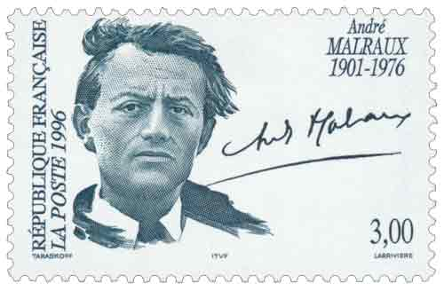

.23-11-1996, kỷ niệm 20 năm ngày qua đời của ông, André Malraux đã rời cái nghĩa trang nhỏ bé Verrières-le-Buisson để vào an nghĩ trong hầm mộ số 6 của điện Panthéon. Ông là nhà văn thứ năm có mặt tại ngôi đền những danh nhân nước Pháp, tiếp theo Voltaire, Rousseau, Hugo và Zola, và là người thứ 9 được đón chào tại đây dưới nền cộng hòa thứ 5, tiếp sau hai vợ chồng Pierre và Marie Curie.
Vậy là André Malraux [1901-1976] được tôn vinh. Nhưng cho Malraux nào đây? Tác giả của Hy vọng hay với tư cách một bộ trưởng, một chiến sĩ tiên phong trong cuộc chiến đấu chống thực dân hay một thi sĩ đầy hứng khởi của chủ nghĩa De Gaulle? Là một nhà mỹ học hay người lính? Và cuối cùng thì Malraux còn lại gì, cuộc đời hay tác phẩm? Đây là chuyện bàn cãi đã cũ và vô ích. Bởi vì ở Malraux, một con người thiên biến vạn hóa còn hơn cả những việc thay hình đổi dạng, với những bí hiểm và những tư thế, cuộc đời và tác phẩm chỉ là một. Tất cả đọng lại trong một số phận. Một trong những người độc đáo nhất của thế kỷ.
Tuy nhiên chẳng bao giờ là vô ích khi soi sáng lại một thiên sử thi đẹp đẽ, giống như Odyssée hay Don Quichotte, với một con người mà André Gide, khi đọc tác phẩm Những kẻ chinh phục (1928) của Malraux đã nói với một người bạn gái: “Tôi thấy ở đây giá trị của một vĩ nhân hơn là một nhà văn lớn”. Thật vậy, một hành động hay một trang viết đều là nhất thể. Malraux đi trên đôi chân, chuyển hành động thành thơ ca, cái mà Chateaubriand gọi là “những sự tô điểm bi tráng”. Cái điều chắc chắn còn lại ở Malraux, chứng nhân và chất xúc tác của thế kỷ, chính là cái cảm quan về phiêu lưu, về mạo hiểm và về cuộc chơi, cái mà bản thân ông đã gọi là “chủ nghĩa hiện thực của phép tiên”. Là một Robinson hay Gil Blas, hay chàng đại úy Achab cả trước khi mơ tưởng đến việc viết một cuốn sách nào đó. Ông là con người của thế giới, của châu Á hay Bắc cực hay một miền châu Phi nào đó, mở ra ở đấy sự đối thoại giữa các nền văn hóa, đối đầu với những ông quan thực dân ở Campuchia, quan sát những vùng nhượng địa của Trung Quốc khi ông sống ít lâu ở Hồng Kông trước khi viết tác phẩm Những kẻ chinh phục và mấy tuần lễ ở Thượng Hải với vợ là Clara trước khi cho Thân phận con người ra đời.
Nhưng trước khi lướt qua sự cùng quẫn của Trung Hoa để mang lại sự miêu tả trữ tình của mình, ông đã trải nghiệm phần lớn điều đó ở mảnh đất Đông Dương. Vụ xung đột với trật tự “bảo hộ” khi ông bị kết tội là kẻ phạm pháp trong vụ lấy đi một số bức tượng và phù điêu tại ngôi đền Banteay Srei, gần đền Angkor, và sau đó, trong một tờ báo do ông và vợ ông sáng lập, đã thách đố các quan bảo hộ của xứ sở mà ông gọi là “Đông dương bị xiềng”.
Không có cái gì cưỡng bức người thanh niên 24 tuổi đó, khi thoát khỏi vụ xét xử ở Sài Gòn và trở về Pháp, lại trở lại nơi tội ác để chống lại một chế độ mà ông đã đo lường mức độ đàn áp và gọi nó là một chế độ bất công. Chàng Malraux lấy đi những phù điêu một ngôi đền bỏ hoang năm 1923 là một kẻ ngoài vòng pháp luật. Chàng Malraux năm 1925, người trong một tờ báo khốn khổ và dùng những vũ khí mà người ta chống lại mình để quấy phá viên thống sứ Cognacq và bọn cảnh binh, là một kẻ chống lại luật pháp, một kẻ tiên khu của tinh thần chống thực dân. Mười năm sau, ông đã viết lời tựa cho cuốn Đông dương cấp cứu của André Viollis (1935) và sau này là một văn kiện quan trọng của những cuộc nổi dậy chống thực dân. TrongSợi dây và những con chuột (1975) ông viết: “Tôi đã được dẫn đến cách mạng, như người ta đã nhận thấy điều đó năm 1925, bởi sự ghê tởm đối với việc xâm chiếm thuộc địa như tôi đã thấy ở Đông Dương”.
Cả trước khi đứng lên chống chủ nghĩa phát xít ở châu Âu và trui rèn trong cuộc chiến đấu đó thành một nhân vật huyền thoại, Malraux đã mở ra một bản án chống lại chủ nghĩa thực dân, không phải chỉ vì chế độ này vi phạm quyền bình đẳng mà còn vì nó sỉ nhục nhân cách một dân tộc năng động. Không phải những trang viết của ông năm 1935 đã thức tỉnh nước Việt Nam hiện đại mà người ta muốn tin rằng nhiều thanh niên Việt Nam khích động và tủi hổ nuôi chí nổi dậy từ bài viết bốc lửa đó: Nếu một người châu Âu lại có thể khám phá ra bao sức mạnh của họ, thì đã đến lúc họ phải bắt tay hành động. Năm 1941 Mặt trận Việt Minh ra đời và 4 năm sau Hồ Chí Minh tuyên bố nền độc lập của Việt Nam.
Vào năm mà ông xuất bản tác phẩm Thân phận con người (1933), bọn quốc xã lên cầm quyền ở Berlin, và Malraux đã không hề mơ hồ, rồi người du kích trong tác phẩm Những kẻ chinh phục trở thành người lính xung kích trong cuộc đấu tranh chống phát xít. Tháng 7 năm 1936, ông chạy sang Tây Ban Nha để bảo vệ chính phủ cộng hòa và Mặt trận bình dân khi mà chính phủ “Bình dân” Pháp đứng xa để nhìn cuộc xung đột đó. Malraux, tác giả của Hy vọng, như người ta biết, đã không chuyển hướng được tiến trình cuộc chiến như nhân vật Hedjaz của mình, nhưng trước khi những binh đoàn quốc tế được thành lập thì phi đội của ông những chiến sĩ tình nguyện và những lính “đánh thuê” đã tham gia hơn một chục trận đánh để cứu vãn thủ đô cộng hòa trong nhiều tháng trời. Tác phẩm Hy vọng, mà phần một ông đặt tên là Ảo tưởng trữ tình, không chỉ hạn chế trong những biến cố Tây Ban Nha mà còn hướng đến những cuộc đấu tranh giữa thế kỷ nhằm thay đổi thân phận con người. Chính ông đã từng tuyên bố với Claude Santelli 30 năm sau rằng cả khi Hitler có thắng trận thì hy vọng của những người đã chiến đấu chống lại cũng không phải là vô ích. Tác phẩm này xem ra không còn là cái mốt được sùng bái vì nó thuộc thể “phóng sự”. Nhưng Những điều trông thấy, một tuyệt tác của Hugo, và Cuộc nổi loạn của Valles, một tác phẩm lớn, chẳng thuộc loại này sao?
Vào tháng sáu năm 1940, khi nước Pháp bị phát xít chiếm đóng Malraux phát hiện lại đất nước giống như trước kia ông phát hiện ra giai cấp vô sản tại các gian nhà lụp xụp ở Chợ Lớn hay Hồng Kông. Tham gia kháng chiến với các nhà lãnh đạo du kích dưới cái tên Berger, nhân vật chính của thiên tiểu thuyết Cuộc chiến đấu với Thiên Thần, một tuyệt tác khác của ông, ông đã lập ra và chỉ huy binh đoàn Alsace-Lorraine cùng với viên tư lệnh tài năng Jacquot, trải qua nhiều gian nguy để bảo vệ vùng đất này, và có quyền đứng trong hàng ngũ những người giải phóng nước Pháp. Vị đại tá Malraux đã được tướng De Gaulle chọn làm bộ trưởng thông tin sau thế chiến cho đến khi ông rút lui vào năm 1946. Khi De Gaulle quay lại chính trường tháng 5-1958, Malraux lại trở lại vị trí cũ, là người đứng ra bảo vệ di sản, bảo tồn những khu phố cổ, cải cách việc giáo dục nghệ thuật, xúc tiến những cuộc triển lãm lớn, đỡ đầu những nhà văn hóa…
Việc rút lui của De Gaulle rõ ràng cũng là sự rút lui của ông. Vào cái tuổi mà Tolstoi viết Phục sinh thì Malraux lại lao đến Dacca ủng hộ nền độc lập của Bangladesh tách ra khỏi Pakistan. Vị “đại tá” già nua kêu gọi bạn bè lập nên một binh đoàn tình nguyện để nâng cao tinh thần chiến đấu của người dân Bengale. Một cuộc phiêu lưu cuối cùng. Jean-Paul Sartre, lấy cái chết của Perken trong tác phẩm Con đường vương giả (La Voie Royale) để viết ra một tác phẩm nền tảng của chủ nghĩa hiện sinh, đã định nghĩa Malraux như là một “sự tồn tại vì cái chết”. Mauriac, về phần mình, ca ngợi ông là nhà văn lớn nhất còn sống của nước Pháp, và bất kể thế nào, là kẻ độc đáo nhất, và tôn vinh “sự vĩ đại của cuộc đời ông hơn là của tác phẩm ông”.
Vào dịp này, nhà triết học Pháp Jean-François Lyotard đã cho ra đời cuốn tiểu sử về Malraux. Cuộc đời ông, như tác giả cuốn sách nói, “ông sống như chết”. Ông sống trong thất vọng và ra đi với hai bàn tay trắng, thiếu vắng vợ con, những ảo tưởng của mình và những thần tượng của mình. Kể từ lúc ra đời ông chỉ mong muốn được chôn trong một huyệt mộ chung.
Thật nghịch lý, khi nghiền ngẫm về những câu đố của thời đại, về cái chết và nghệ thuật, ông tự hỏi chúng ta sẽ còn lại gì khi qua đời, và hết lòng mong muốn sẽ để lại cho hành trình của ông trên trái đất một vết hằn. Ông từng viết: “Những ai tự hỏi về ý nghĩa cuộc sống đã đặt ra một câu hỏi không có lời giải đáp”. Và nếu điện Panthéon không phải là câu trả lời, thì ít nhất cũng phải là một địa chỉ. Malraux đã tìm thấy ở đấy những kẻ đồng hành, để cuối cùng đối thoại với những người chết. Ít nhất thì phiến đá hoa cương kia cũng mãi mãi chỉ ra cái cột mốc của ông.